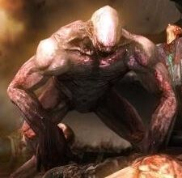
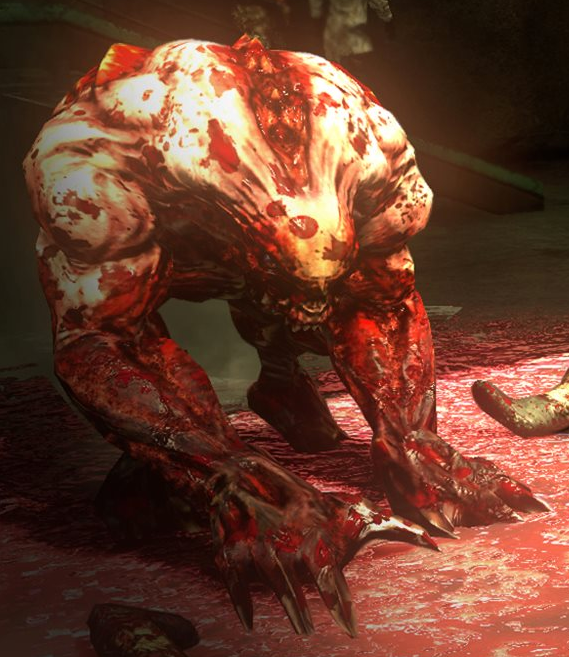
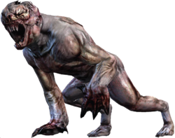
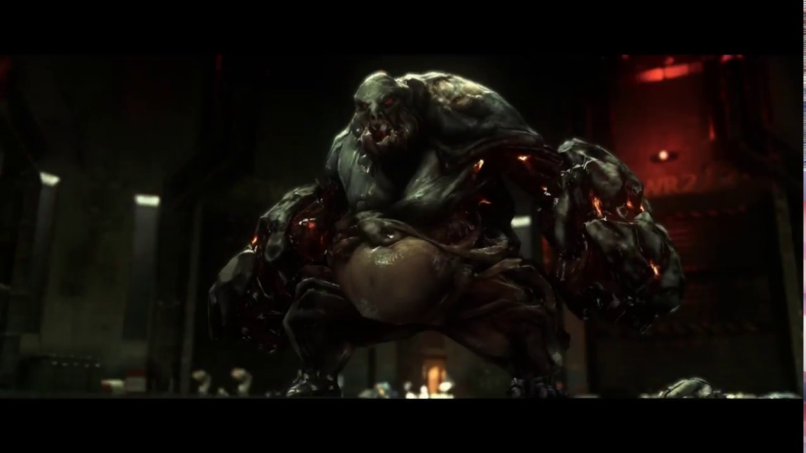
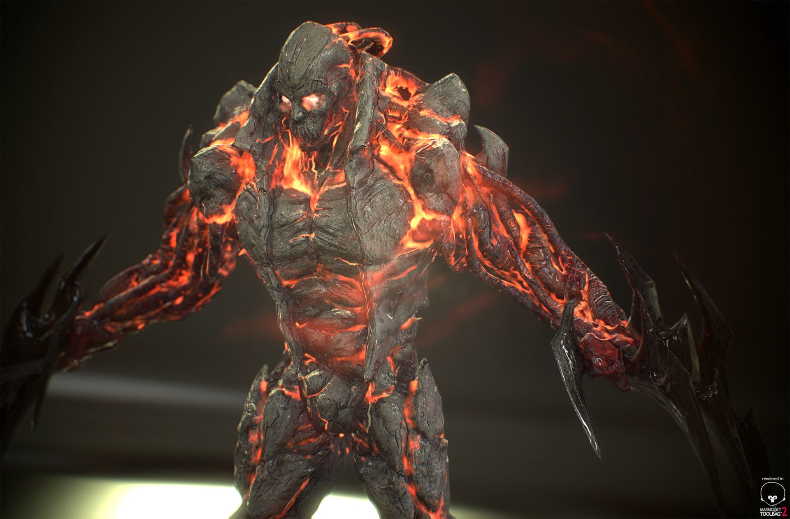
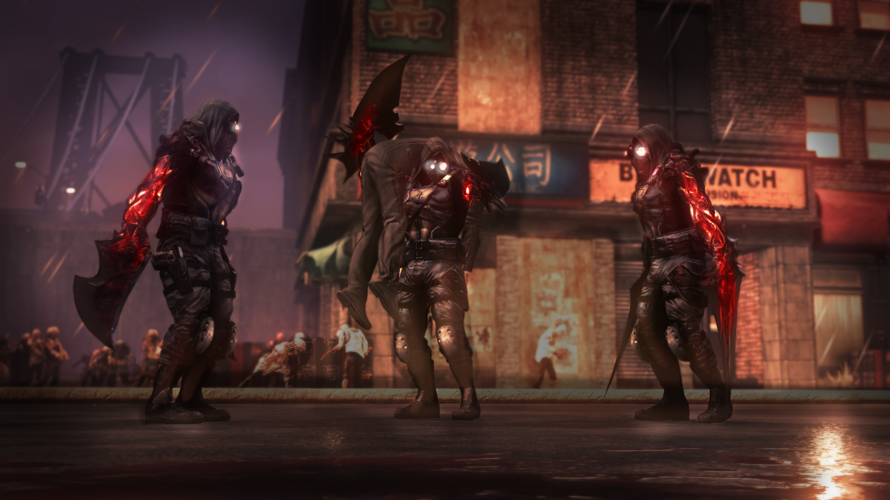

10.
Specialist Cross

Yes,one of the people which annoyed us while playing prototype 1 for the first time is Specialist Robert Cross.He got insanely strong armor and has mastered hand to hand combat skills.
He has got a complex launcher too by which he launches many missiles. He gave a tough fight to Alex Mercer before getting smacked in the face.He also got a baton from which he fights in melee combat.His extremely fast reflexes earn him a spot in the list.
He got defeated by Alex Mercer and killed and consumed by Supreme Hunter.
9.
Supersoldiers

Designed to fight superhuman beings like hunters(infected monsters of blacklight virus) posess superhuman strength,speed,agility,reflexes can run on the buildings like normal roads.They can block attacks from Alex Mercer's Blade and counter very easily.They can cause a big whole in the iron with just a punch but are vulnerable to counters.They are a big threat for Alex Mercer while infiltrating military base.Their these factors and armor earn them a spot on the list.
They are humans ,this is their only weakness.They can go toe to toe with a hunter.
8.
Hunters

The infected monsters controlled by Elizabethe Greene are very insane and psycho they just attack on anyone no matter how powerful he is.Their non-stop claw attacks and shockvave production lead massive amount of damage.Alex Mercer obtained claw power by consuming a hunter.Their main power is insanity in them.Their strength can divert tanks in a collision.They can tank 3 homing missiles before being dead.Hunters are a big threat for military.They also get more powerful after consuming anyone.
7.
Brawlers

The infected monsters controlled by Alex Mercer are very insane and psycho they just attack on anyone no matter how powerful he is.Their non-stop claw attacks and shockvave production lead massive amount of damage.James Heller obtained claw power by consuming a Brawler.Their main power is insanity in them.Their strength can divert tanks in a collision.They can tank 3 homing missiles before being dead.Brawlers are a big threat for military.They are just slightly more powerful than hunters because they are more durable.They also get more powerful after consuming anyone.
6.
Leader Hunters and Juggernauts


1 Leader Hunter has got power of 12 hunters inside it.He is very difficult to be defeated without air blade slice.They are 12x insane,stronger,powerful than hunters.It also leads a pack of normal hunters too.It has got thunderwave much stronger than that of a hunter's.It can survive almost every type of military weapon except nuke and bloodtox.Juggernauts are very strong their armor plated body takes very less damage from missiles.Their strength is they can lift helicopters and they are very insane too they have got an armor plated body .Their hard punch sents a car flying.
5.
Goliath and The Evolved


The Goliath is equivalent of the supreme hunter in prototype 2.It has got a massive size plus great strength ,endurance and powers.It uses its arm as a weapon because its arm is as large as abuilding.Not to mention his razor sharp claws which can cut through metal any day.Its devastator attacks are tendril barrage devastator and groundspike graveyard.Yes,he deserves a spot so much above in the list.
The Evolved are the humans who have been granted powers by Alex Mercer they have their own mind and can think for themselves they posess very lethal attacks and blades.They are strong enough to lift a military jet,Because of their sharp mind their attacks and combinations are unpredictible.They can run at a speed of 400 km per hour.
4.
Supreme Hunter

Supreme Hunter was born from vomit done by Elizabeth Greene.One of the few monsters that can think on their own is as powerful as hell.Way strong devastators and punches that can destroy a tank in one hit.He is a sharp minded guy as he consumed specialist Robert Cross and helped Alex Mercer throughout the game only to take advantage of him.In the first encounter with Alex Mercer,He was turned to liquid but still regenrated.However at the end he was dismembered by Alex Mercer and his body cells got erased in a nuke..
3.
Elizabeth Greene

Elizabeth Greene ,the chosen one by blacklight virus itself is the reason for the mayhem caused in Manhattan.She has got everything the control on the infected,Superhuman strentgh,speed,regeneration,Symbiotic roar and many more.She can transform into her most powerful form the mother which is sos strong that one roar would destroy all the military around it.However,she was looking weak against Alex Mercer who killed her mother form and consumed her and that was the end of Elizabeth Greene.She deserves a top 3 spot.
2.
James Heller

Chosed by Alex Mercer to lead an attack on blackwatch and gentek he has consumed every infected creature's biomass.He has defeated Alex Mercer.In arsenal he has got powerful and lethal blade,razor sharp claws,slow but more damaging hammerfists.The devestators are stronger than that of supreme hunter.He can regenerate from a single cell too.He consumed every infected and put an end to blacklight virus outbreak.He is arguebly in the top 2 most powerful characters.
1.
Alex Mercer
.jpg)
Yup,the most powerful character in prototype is the blacklight virus itself Alex Mercer.He kicked ass of supreme hunter,elizabethe greene,mother,Leader hunters,James Heller and every kind of monster.He has consumed more than a thousand infected and has become so powerful that even the nuclear nuke couldn't kill him.He is the only prototype who has grown immunity to bloodtox the cure of the virus and was the one responsible for destroying it too.He has got strength that he can lift a whole specter tank with one hand and throw it in space.For Killing he has got blade powerful ,damaging,lethal and razor sharp,the claws for pouncing attacks,muscle mass for multplying his strength,the hammerfists for crushing,the whipfist for long range attacks.His devestators are 2x of James Heller. His devestators are capable of destroying anything that comes into its radius and are very long range.He has killed mother(Elizabeth greene),supreme hunter and almost every infected monster and defeated James Heller.He is the most powerful character in prototype universe.Heller was only able to defeat him because of the story without the plot armor Heller wouldn't stand a chance against him.He has got an armor which is indestructible it cannot break no matter what.I